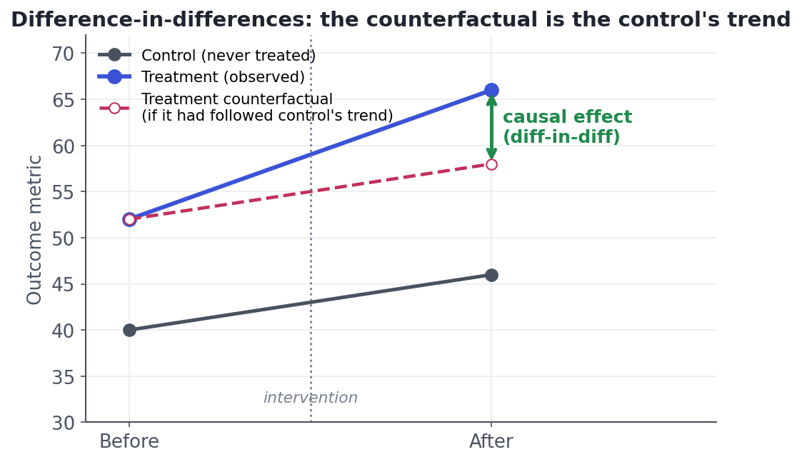

Basic Causal Methods
Matching, regression adjustment, diff-in-diff.
Sometimes you simply can't run an experiment: it would be unethical (you can't randomly assign smoking), impossible (you can't randomize a country's minimum wage), or too late (the feature already shipped to everyone). Causal inference offers a toolkit that approximates a randomized experiment from observational data — by finding or constructing a comparable group that shows what would have happened. None is as clean as randomization, and each rests on an assumption you must defend — but done carefully, they turn "we can't experiment" into "we can still estimate."
Method 1 & 2Make the groups comparable — matching & adjustment
If a confounder Z makes treated and untreated units different, the fix is to compare like with like:
- Matching / propensity scores. Pair each treated unit with an untreated unit that has the same confounders (same age, spend, tenure...). With many confounders, summarise them into a single propensity score — the modelled probability of being treated — and match on that. Comparing units with equal propensity mimics a randomized split within each matched stratum.
- Regression adjustment. Put the confounders into the model (
Y ~ X + Z1 + Z2 + ...) and read the coefficient on X as the effect holding confounders fixed — exactly what you did in lesson 7.1. Simple and powerful, if you've measured and correctly specified the confounders.
Both methods can only adjust for confounders you measured. They do nothing about unobserved confounding — the lurking variable you didn't record. That's their permanent Achilles' heel, and why a matched/adjusted estimate is "causal if we've captured the important confounders," never an unconditional guarantee.
Method 3Borrow a trend — difference-in-differences
When a policy or feature hits one group but not another at a known time, you can use the untreated group's change over the same period as the counterfactual — what would have happened to the treated group anyway. The causal effect is the difference of the two differences: how much the treated group changed, minus how much the control changed:

It's arithmetic once you see it: DiD = (treated_after − treated_before) − (control_after − control_before). The magic is that any fixed difference between the groups (treated started higher) and any shared trend over time (both rose with the season) cancel out — leaving only the treatment's own effect.
DiD lives or dies on the parallel-trends assumption: absent the treatment, the two groups would have moved in parallel. You can't prove it (the counterfactual is unobserved), but you can make it credible by showing the groups moved in parallel for many periods before the treatment. If their pre-trends already diverged, DiD is measuring that divergence, not the treatment.
Method 4 & 5Two more, briefly — IV and RDD
- Instrumental variables (IV). Find an instrument: something that nudges treatment X but affects the outcome Y only through X, and is unrelated to the confounders. Randomised-ish 'natural' nudges (a lottery, a policy quirk, distance to a clinic) create quasi-random variation in X you can exploit. Powerful, but valid instruments are rare and their assumptions are hard to verify.
- Regression discontinuity (RDD). When treatment is assigned by a sharp cutoff on some score (scholarship if GPA ≥ 3.5; drug if risk-score ≥ threshold), units just above and just below the line are essentially identical by luck — so comparing them near the cutoff is almost a randomized experiment. Clean and credible, but only speaks to units near the threshold.
Interactive labYour turn — compute a difference-in-differences
A loyalty program launched in the treated region but not the control region. Using the before/after average-spend arrays, compute the difference-in-differences estimate of the program's effect — (treated change) − (control change) — round to 1 decimal, and assign to answer.
.mean() of each of the four arrays; compute the treated change and the control change; subtract the second from the first; round to 1 dp.did = (treat_after.mean() - treat_before.mean()) - (ctrl_after.mean() - ctrl_before.mean())
answer = round(float(did), 1)The treated region rose 13.6 while the control rose 6 from the background trend — so the program's own effect is the difference of differences, about 7.6. Subtracting the control's change is what removes the seasonal/background trend the program didn't cause.
★ Key points to remember
- When you can't randomize, causal methods approximate an experiment by building a comparable counterfactual.
- Matching / propensity scores and regression adjustment compare like-with-like on measured confounders — blind to unmeasured ones.
- Difference-in-differences uses a control group's trend as the counterfactual: DiD = (treated Δ) − (control Δ); relies on parallel trends.
- Instrumental variables exploit a quasi-random nudge to treatment; RDD exploits a sharp assignment cutoff — both credible but narrow.
- Every method rests on an untestable assumption (no unmeasured confounding / parallel trends) — state it and defend it.
◆ Practice▸
Show solution & reasoning
"It's causal under an assumption we can't fully verify: that age, tenure, and past spend capture the important ways treated and control users differ — i.e. no unmeasured confounding. Matching balanced the confounders we observed, so within matched pairs the comparison mimics a randomized split. But if some unmeasured factor (say, intrinsic motivation) drives both taking the treatment and the outcome, the estimate is still biased. So: it's our best causal estimate given the data, I'd report the assumption explicitly, run a sensitivity analysis to see how strong an unmeasured confounder would have to be to overturn it, and note that only a randomized test would settle it definitively." Honesty about the assumption is the senior answer.
Show solution & reasoning
Example: to estimate the effect of military service on later earnings, the Vietnam draft lottery number is a classic instrument — it randomly nudged the probability of serving. The two properties: (1) relevance — the instrument must actually affect the treatment (a low draft number raised the chance of serving); and (2) the exclusion restriction — the instrument affects the outcome only through the treatment and is unrelated to confounders (your lottery number shouldn't affect later earnings except via whether you served). Relevance is testable; the exclusion restriction is an untestable judgement call — which is why credible instruments are rare and prized.
◎ Deep dive: propensity scores, IPW, doubly-robust estimation, and choosing your assumption▸
Propensity scores, a little deeper. The propensity score e(Z) = P(treated | Z) collapses many confounders into one number. Its magic property (Rosenbaum-Rubin): if treatment is unconfounded given Z, it's also unconfounded given just e(Z) — so you can match, stratify, or weight on a single score instead of balancing dozens of variables. Inverse-propensity weighting (IPW) reweights the sample so treated and control look alike; doubly-robust estimators combine a propensity model and an outcome model, and stay unbiased if either one is correct — a useful insurance policy. The catch remains: the score is built only from measured confounders.
Choosing a method is choosing which assumption you can defend. Randomize if you possibly can — it needs the fewest assumptions. Otherwise, pick the design whose key assumption is most credible in your setting: DiD when you have a clean comparison group and parallel pre-trends; RDD when a sharp cutoff assigns treatment; IV when a genuinely as-good-as-random nudge exists; matching/regression when you're confident you measured the confounders. Then stress-test the assumption: plot pre-trends for DiD, check covariate balance after matching, run sensitivity analyses for unmeasured confounding. The deliverable of good causal work is not just an estimate — it's an estimate plus an honest account of what has to be true for it to hold.
Name the method and its assumption in the same breath: DiD → parallel trends; matching/regression → no unmeasured confounding; IV → relevance + exclusion; RDD → continuity at the cutoff. Candidates who say "I'd use difference-in-differences, and I'd defend it by checking the pre-treatment trends are parallel" sound like they've done this for real.